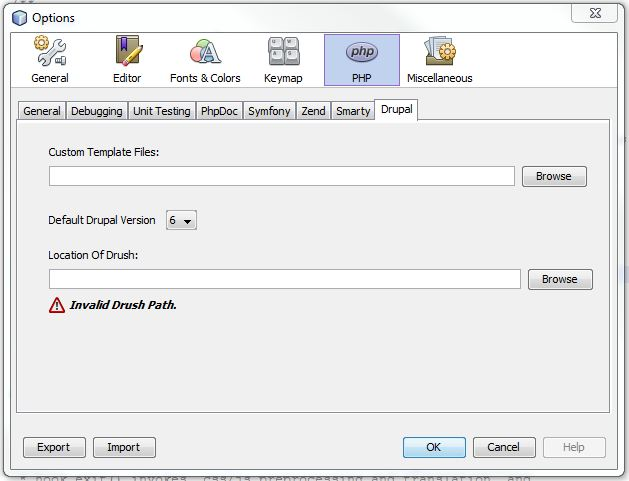
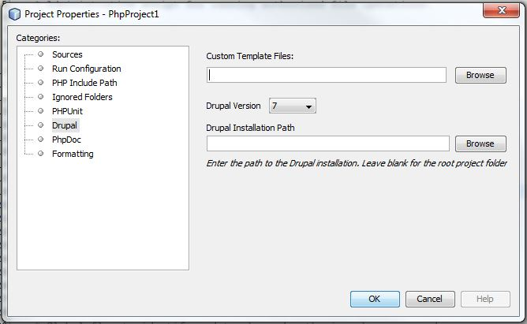

NDDT has configuration on both a global level and per project. With the exception of a couple of items, the configuration is very similar. When you access Tools -> Options in the Netbeans menu, click on the PHP tab. From there you will see a secondary tab for Drupal:

The top section is for specifying custom templates, which is covered in details in the customization section.
Following the custom templates section is the default Drupal version. The version set here will apply to all projects that do not have a Drupal version specified.
The final section is for the location of Drush. Drush is not included with this module and the installation of Drush goes beyond the scope of this document, however excellent help is available on the on drupal.org.
You can override most global settings through the per-project properties. To access this window, right click on your project and select properties. In the left hand tree, click on the Drupal category:

The options available here are the same as the global options, with the exception of the bottom item. There is where you can specify the actual location of Drupal within your project. By default NDDT looks for Drupal in the project's root source file. If you have Drupal installed in a subdirectory, then specify it here. This is imperative for Drush to function properly.